Click any image for a larger view in a new browser tab.
| The late Richard Gardner of New Orleans designed some lovely 18-foot box cars that I stumbled upon in the fall of 2014. Finding that his drawings were still available, I decided to build a few for myself.
The following photos give an idea of my progress, and I will add notes in due time. Wherever you are Richard, thanks for the encouragement. |
|||
| 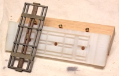 | 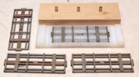 | I made up this fixture from UHMW plastic for assembling the underbody framework. It worked out really well, as you can see from these first four parts. | |
|---|---|---|---|
| The slots were pretty snug on the frame pieces, and as I didn't fancy trying to dig the finished pieces out with an x-acto, dental pick or screwdriver, I bored three holes along the center. I then matched these with three holes in a piece of oak. The oak block holds 1-inch pieces of 1/4-inch brass rod which work nicely as ejector pins. | |||
| 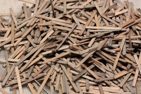 | 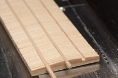 | 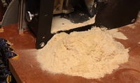 | |
| I didn't have any scribed siding in my inventory, so I used that as an excuse to sheath my box cars board by board. That meant back to my Byrnes Model Machines table saw and the diluted leather dye baths. The roof rafters were a challenge, though slotting them for stringers en masse went quickly. This was just some of the sawdust created. | |||
| 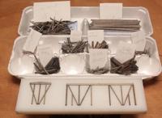 | 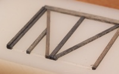 | 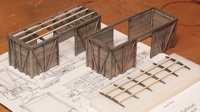 | |
| An egg box makes a handy sorting bin for the different framing members for the sides and ends. I made up another UHMW fixture for assembling these, as well as the roofs. Note that the corner posts are notched for the side sheathing. I didn't want to see the ends butted up against the posts. | |||
| 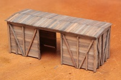 | 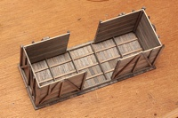 | 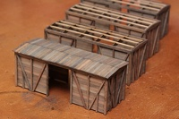 | |
| Despite so many pieces, framing these up went quite quickly with the fixtures. I really like the look of the planking at this point, though do plan to distress it a bit, adding some exaggerated grain texture and some knot holes. Yeah, that would have been a lot easier while the stock was still in long strips. | |||
| 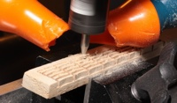 | 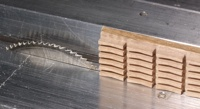 | 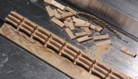 | |
| The images above show how I made the roof walk supports using my CNC mill and my Byrnes Model Machines table saw. They worked out very well, as shown below. | |||
| 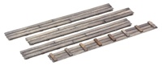 | 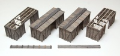 | 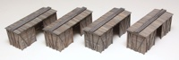 | |
|
This is pretty much the current status of my boxcars. The roofs and roof walks remain individual assemblies, waiting for the doors, final color on the boxes and treatment on the roofs before final assembly. The plan is to go with a moderately weathered look, with some peeling paint and other apparent distress. Markings will reflect Richard Gardner's intended Sweet Haven RR livery.
Most recently, I have cast some lead slugs to fill in between the bolsters and the floor on one of the frames. I then glued up one floor and mounted a set of BVM T2 trucks on the frame. Beyond that though, I haven't had a chance yet to even check the coupler height. | |||
Copyright 2016, Thayer Syme
All rights reserved